Mapping SAT Scores Across the US
Sunder Sai
Introduction:
In this project I will be working with Spatial Packages in R to access, manage, and export spatial data for visualization. I use SAT Math and Verbal test scores that are publicly available from College Board on their website. I completed this project as a graduate student at Columbia University Mailman School of Public Health as part of the Advanced GIS & Spatial Analysis course under the guidance of Dr. Jeremy Porter.
Part 1: Projections
1.1) The World Boundaries
- Here, I load required packages, assign the world boundary file to the object
worldand then examine the units by displaying country names
library(maps)
oldpar<-par()
world <- map("world", res=0)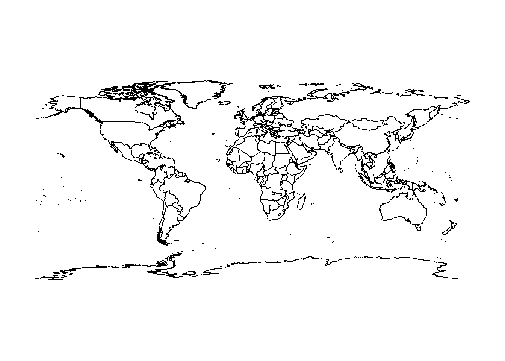
str(world)## List of 4
## $ x : num [1:82403] -69.9 -69.9 -69.9 -70 -70.1 ...
## $ y : num [1:82403] 12.5 12.4 12.4 12.5 12.5 ...
## $ range: num [1:4] -180 190.3 -85.2 83.6
## $ names: chr [1:1627] "Aruba" "Afghanistan" "Angola" "Angola:Cabinda" ...
## - attr(*, "class")= chr "map"head(world$names)## [1] "Aruba" "Afghanistan" "Angola" "Angola:Cabinda"
## [5] "Anguilla" "Albania"plot(world)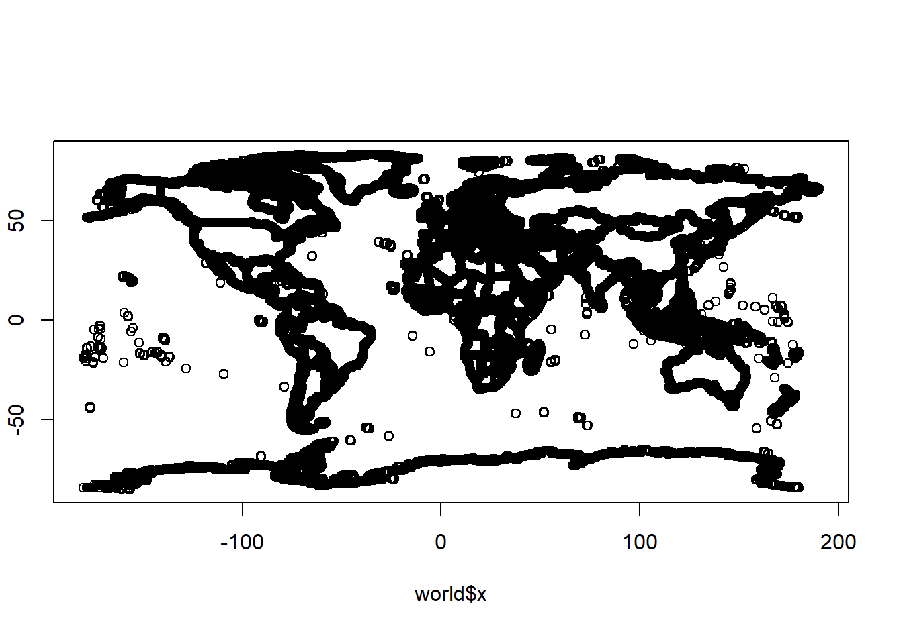
1.2) US Boundaries
- Next, I assign the state boundary file to the object
statesand display names of states
states <- map("state", res=0)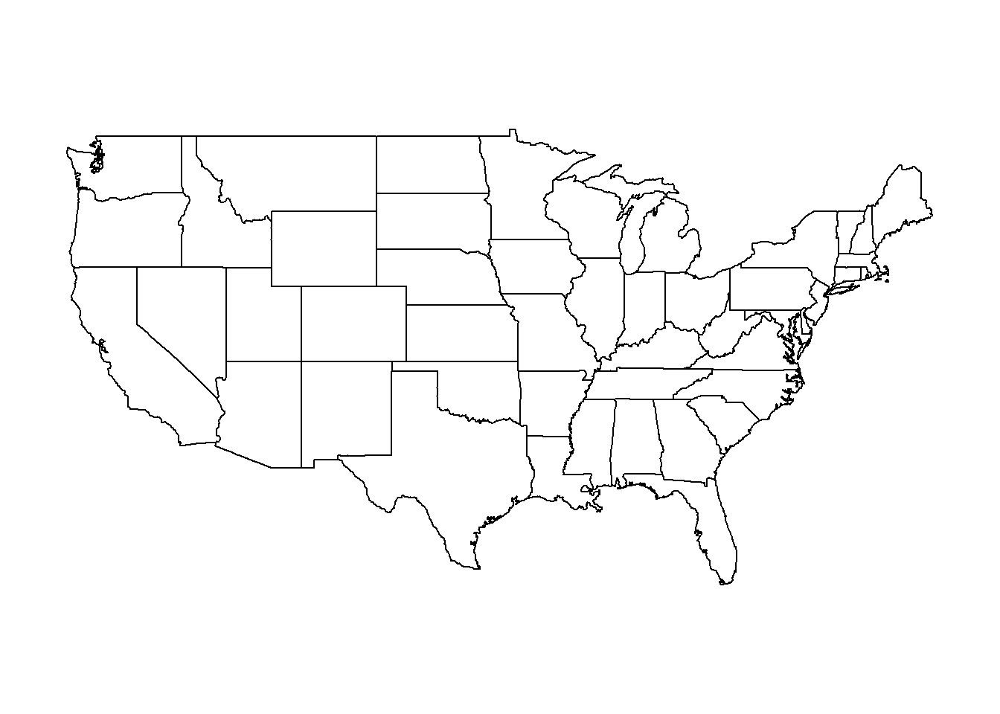
str(states)## List of 4
## $ x : num [1:11687] -88.4 -88.4 -88.3 -88.3 -88.3 ...
## $ y : num [1:11687] 30.4 30.4 30.4 30.4 30.4 ...
## $ range: num [1:4] -124.7 -67 25.1 49.4
## $ names: chr [1:63] "alabama" "arizona" "arkansas" "california" ...
## - attr(*, "class")= chr "map"head(states$names)## [1] "alabama" "arizona" "arkansas" "california" "colorado"
## [6] "connecticut"plot(states)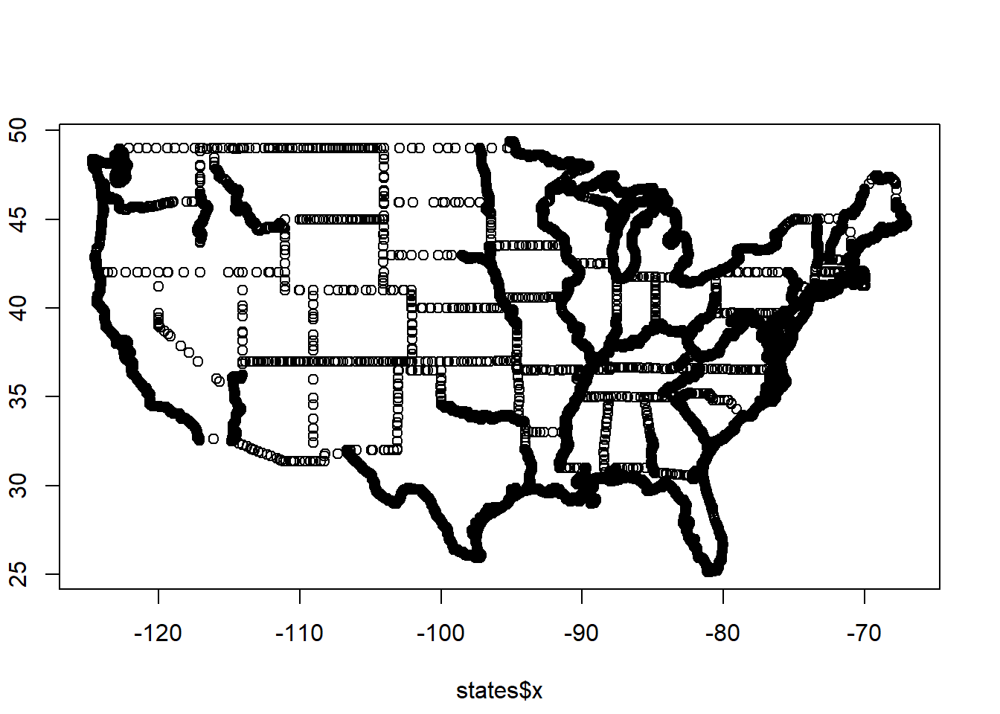
1.3) Spatial Lines
- Using
maptoolsI create spatial lines objects using long/lat projections
library(maptools)## Loading required package: sp## Checking rgeos availability: TRUEspworld <- map2SpatialLines(world, proj4string = CRS("+proj=longlat"))
spstates <- map2SpatialLines(states, proj4string = CRS("+proj=longlat"))
str(spworld, max.level=2)## Formal class 'SpatialLines' [package "sp"] with 3 slots
## ..@ lines :List of 1973
## ..@ bbox : num [1:2, 1:2] -180 -85.2 190.3 83.6
## .. ..- attr(*, "dimnames")=List of 2
## ..@ proj4string:Formal class 'CRS' [package "sp"] with 1 slotstr(spstates,max.level=2)## Formal class 'SpatialLines' [package "sp"] with 3 slots
## ..@ lines :List of 169
## ..@ bbox : num [1:2, 1:2] -124.7 25.1 -67 49.4
## .. ..- attr(*, "dimnames")=List of 2
## ..@ proj4string:Formal class 'CRS' [package "sp"] with 1 slotplot(spworld)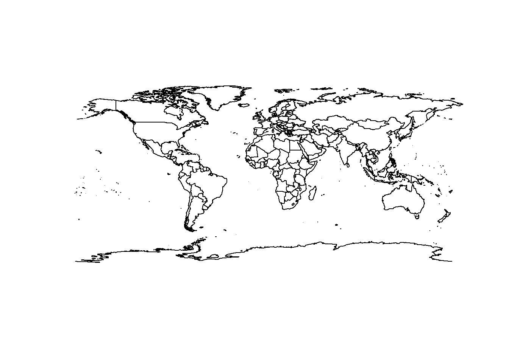
plot(spstates)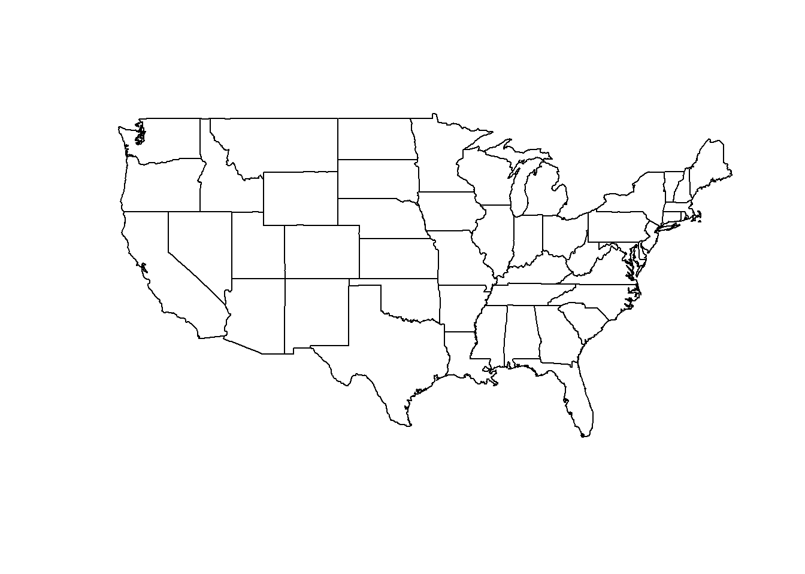
1.4) Long/Lat Projections
- Using the
rgdalpackage we can examine differences in displays of long/lat projections.
library(rgdal)## rgdal: version: 1.4-8, (SVN revision 845)
## Geospatial Data Abstraction Library extensions to R successfully loaded
## Loaded GDAL runtime: GDAL 2.2.3, released 2017/11/20
## Path to GDAL shared files: C:/Users/Sunder Sai/Documents/R/win-library/4.0/rgdal/gdal
## GDAL binary built with GEOS: TRUE
## Loaded PROJ.4 runtime: Rel. 4.9.3, 15 August 2016, [PJ_VERSION: 493]
## Path to PROJ.4 shared files: C:/Users/Sunder Sai/Documents/R/win-library/4.0/rgdal/proj
## Linking to sp version: 1.4-2world.laea <- spTransform(spworld, CRS("+proj=laea +lat_0=0 +lon_0=0"))
states.laea <- spTransform(spstates, CRS("+proj=laea +lat_0=43.0758 +lon_0=-89.3976"))
states.epsg <- spTransform(spstates, CRS("+init=epsg:3623"))- This appears better when we use the Lambert Azmuthal Equal Area (known as laea) projection
#Run Following Code chunk together
par(mfrow = c(2, 2), pty = "s", cex.axis = 0.5)
plot(spworld, axes = T)
title(main = "Longitude and\nLatitude")
plot(world.laea, axes = T)
title(main = "Lambert Azimuthal\nEqual Area")
plot(spstates, axes = T)
title(main = "Longitude and\nLatitude")
plot(states.laea, axes = T)
title(main = "Lambert Azimuthal\nEqual Area")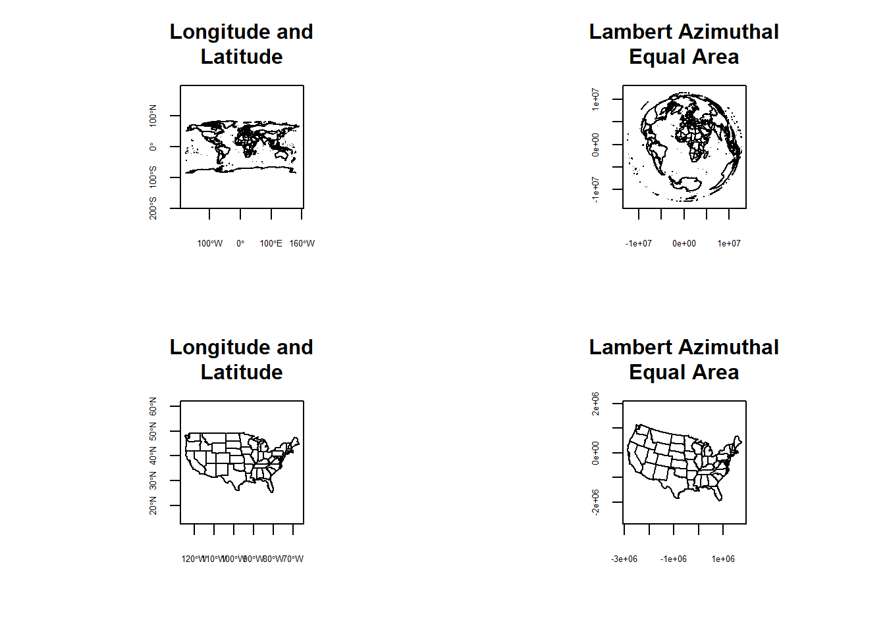
Part 2: Spatial Referencing
2.1: Linking Data to Spatial Objects in R
- Here, I create the
map.statesobject by calling the states boundaries. - I then list the state names by using
strsplitfunction to separate their true names from other location aspects
par(oldpar)
map.states <- map("state", plot = T, fill = T, res=0)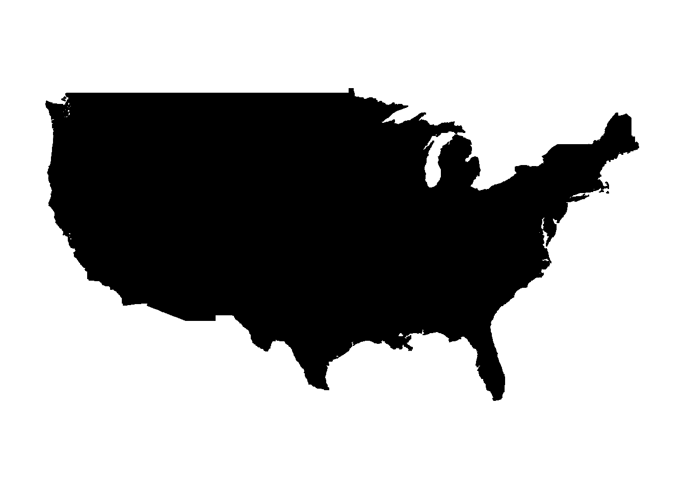
str(map.states)## List of 4
## $ x : num [1:15599] -87.5 -87.5 -87.5 -87.5 -87.6 ...
## $ y : num [1:15599] 30.4 30.4 30.4 30.3 30.3 ...
## $ range: num [1:4] -124.7 -67 25.1 49.4
## $ names: chr [1:63] "alabama" "arizona" "arkansas" "california" ...
## - attr(*, "class")= chr "map"names(map.states)## [1] "x" "y" "range" "names"head(map.states$names)## [1] "alabama" "arizona" "arkansas" "california" "colorado"
## [6] "connecticut"list.names.states <- strsplit(map.states$names,":")
head(list.names.states)## [[1]]
## [1] "alabama"
##
## [[2]]
## [1] "arizona"
##
## [[3]]
## [1] "arkansas"
##
## [[4]]
## [1] "california"
##
## [[5]]
## [1] "colorado"
##
## [[6]]
## [1] "connecticut"2.2) Converting to Spatial Polygons
- I then convert the
map.statesobject to a Spatial Polygon with IDs set tomap.IDs - I visualize our base map here, below
map.IDs <- sapply(list.names.states, function(x) x[1])
head(map.IDs, n=63)## [1] "alabama" "arizona" "arkansas"
## [4] "california" "colorado" "connecticut"
## [7] "delaware" "district of columbia" "florida"
## [10] "georgia" "idaho" "illinois"
## [13] "indiana" "iowa" "kansas"
## [16] "kentucky" "louisiana" "maine"
## [19] "maryland" "massachusetts" "massachusetts"
## [22] "massachusetts" "michigan" "michigan"
## [25] "minnesota" "mississippi" "missouri"
## [28] "montana" "nebraska" "nevada"
## [31] "new hampshire" "new jersey" "new mexico"
## [34] "new york" "new york" "new york"
## [37] "new york" "north carolina" "north carolina"
## [40] "north carolina" "north dakota" "ohio"
## [43] "oklahoma" "oregon" "pennsylvania"
## [46] "rhode island" "south carolina" "south dakota"
## [49] "tennessee" "texas" "utah"
## [52] "vermont" "virginia" "virginia"
## [55] "virginia" "washington" "washington"
## [58] "washington" "washington" "washington"
## [61] "west virginia" "wisconsin" "wyoming"polystates <- map2SpatialPolygons(map.states, IDs = map.IDs,proj4string = CRS("+proj=longlat"))
summary(polystates)## Object of class SpatialPolygons
## Coordinates:
## min max
## x -124.68134 -67.00742
## y 25.12993 49.38323
## Is projected: FALSE
## proj4string : [+proj=longlat +ellps=WGS84]plot(polystates)2.3) Projecting States
- Here, I project the
statesobject using the laea projection command - I then set and list the spatial polygon IDs for
states.laea - This map is more accurate in terms of curvature of the globe
states.laea <- spTransform(polystates, CRS("+proj=laea +lat_0=43.0758 +lon_0=-89.3976"))
plot(states.laea)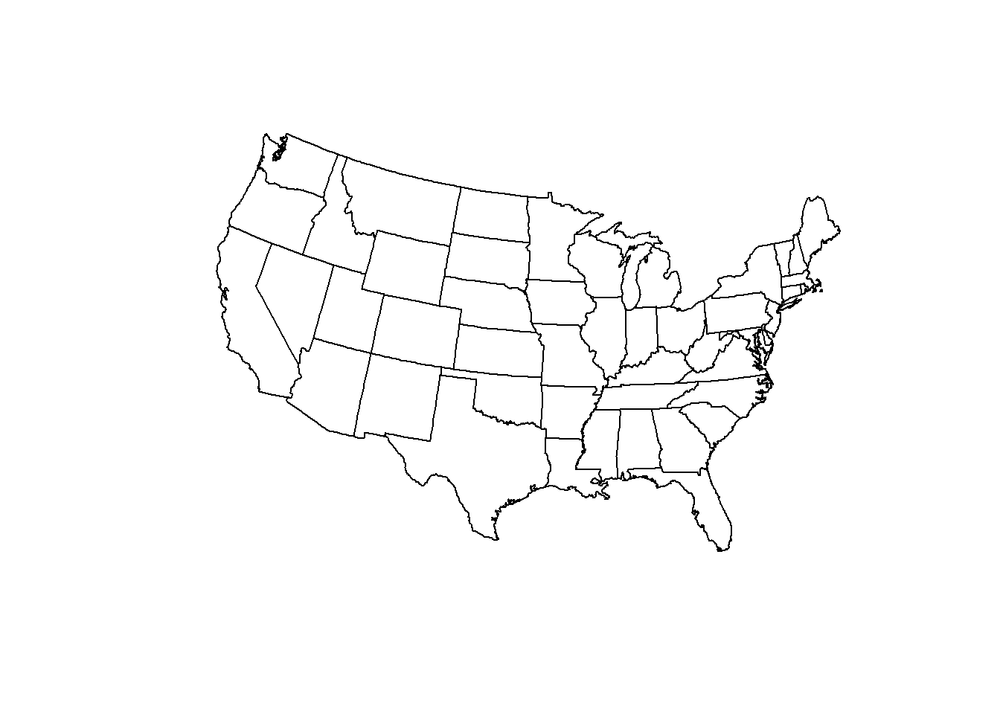
sp.IDs <- sapply(slot(states.laea, "polygons"), function(x) slot(x,"ID"))
head(sp.IDs, n=50)## [1] "alabama" "arizona" "arkansas"
## [4] "california" "colorado" "connecticut"
## [7] "delaware" "district of columbia" "florida"
## [10] "georgia" "idaho" "illinois"
## [13] "indiana" "iowa" "kansas"
## [16] "kentucky" "louisiana" "maine"
## [19] "maryland" "massachusetts" "michigan"
## [22] "minnesota" "mississippi" "missouri"
## [25] "montana" "nebraska" "nevada"
## [28] "new hampshire" "new jersey" "new mexico"
## [31] "new york" "north carolina" "north dakota"
## [34] "ohio" "oklahoma" "oregon"
## [37] "pennsylvania" "rhode island" "south carolina"
## [40] "south dakota" "tennessee" "texas"
## [43] "utah" "vermont" "virginia"
## [46] "washington" "west virginia" "wisconsin"
## [49] "wyoming"Part 3: SAT Data
3.1) Downloading data and creating spatial dataframe
- First, I download the data and view its contents
- There are 50 states, its abbreviations, and the Math scores
#START
sat_math<- read.csv("data/sat_math.csv", stringsAsFactors = F,row.names = 1)
head(sat_math, n=50)## name.abbrev math
## north dakota nd 605
## iowa iowa 598
## minnesota minn 598
## wisconsin wis 595
## south dakota sd 588
## illinois ill 585
## kansas kan 576
## missouri mo 572
## nebraska neb 571
## utah utah 568
## michigan mich 565
## oklahoma okla 560
## louisiana la 558
## arkansas ark 556
## alabama ala 555
## tennessee tenn 553
## wyoming wyo 551
## mississippi miss 548
## kentucky ky 547
## montana mont 546
## new mexico nm 542
## idaho idaho 540
## colorado colo 540
## ohio ohio 538
## washington wash 526
## oregon ore 525
## arizona ariz 525
## new hampshire nh 518
## nevada nev 517
## california calif 514
## west virginia wva 512
## massachusetts mass 511
## new jersey nj 510
## connecticut conn 509
## maryland md 507
## vermont vt 506
## maine maine 503
## new york ny 502
## virginia va 499
## rhode island ri 499
## texas texas 499
## florida fla 498
## indiana ind 498
## delaware dela 497
## pennsylvania pa 495
## north carolina nc 493
## georgia ga 482
## district of columbia d.c. 478
## south carolina sc 475- Then, I create a spatial dataframe
- I plot a base laea version of this here below
states.math <- SpatialPolygonsDataFrame(polystates,sat_math)
summary(states.math)## Object of class SpatialPolygonsDataFrame
## Coordinates:
## min max
## x -124.68134 -67.00742
## y 25.12993 49.38323
## Is projected: FALSE
## proj4string : [+proj=longlat +ellps=WGS84]
## Data attributes:
## name.abbrev math
## Length:49 Min. :475.0
## Class :character 1st Qu.:503.0
## Mode :character Median :526.0
## Mean :533.7
## 3rd Qu.:558.0
## Max. :605.0states.math.laea <- spTransform(states.math, CRS("+proj=laea +lat_0=43.0758 +lon_0=-89.3976"))
plot(states.math.laea)
- We can view a brief summary of this below
summary(states.math.laea)## Object of class SpatialPolygonsDataFrame
## Coordinates:
## min max
## x -2873919 1743901
## y -1944592 1149428
## Is projected: TRUE
## proj4string :
## [+proj=laea +lat_0=43.0758 +lon_0=-89.3976 +ellps=WGS84]
## Data attributes:
## name.abbrev math
## Length:49 Min. :475.0
## Class :character 1st Qu.:503.0
## Mode :character Median :526.0
## Mean :533.7
## 3rd Qu.:558.0
## Max. :605.03.2) Color Ramps for Mapping
- We need to first install and load the color brewer package
- Then we can visualize the different color ramps as seen below
library(RColorBrewer)
display.brewer.all()
display.brewer.pal(5, "Greys")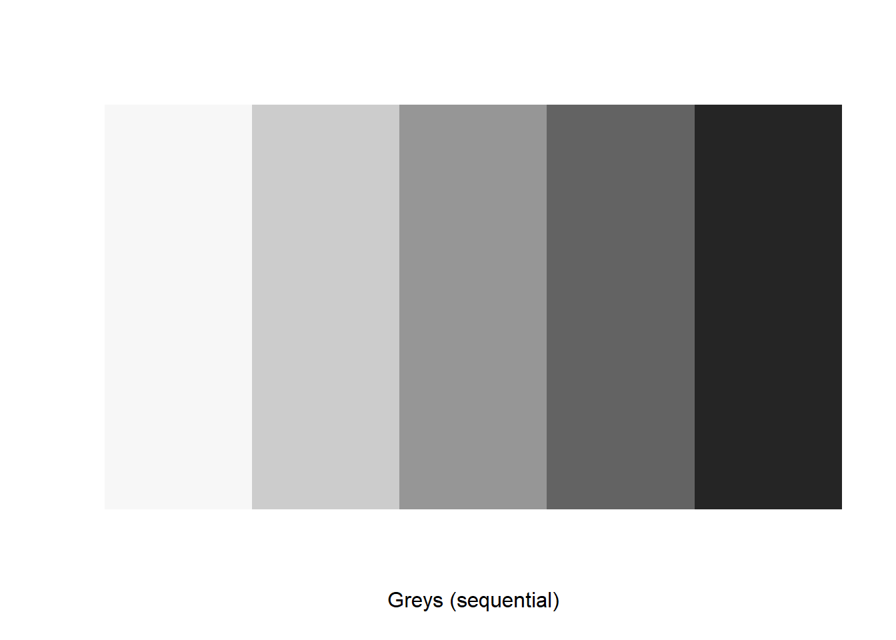
- These different color ramps can be used to represent different variations in SAT scores
Part 4) Mapping
4.1) Visualize distribution of SAT math scores
- I use the
classIntpackage to set class categories - Using the following code, I visualize the distribution of SAT verbal Scores broken into Quantiles
library(classInt)
plotvar <- states.math.laea$math
nclr <- 5
plotclr <- brewer.pal(nclr, "Greys")
plotclr## [1] "#F7F7F7" "#CCCCCC" "#969696" "#636363" "#252525"class <- classIntervals(plotvar, nclr, style = "quantile")
class## style: quantile
## one of 111,930 possible partitions of this variable into 5 classes
## [475,499) [499,514.6) [514.6,545.2) [545.2,566.2) [566.2,605]
## 8 12 9 10 10- Here we can check out the hex codes for the different colors
- Below is also a black and white map
colcode <- findColours(class, plotclr, digits = 3)
colcode## [1] "#636363" "#969696" "#636363" "#CCCCCC" "#969696" "#CCCCCC" "#F7F7F7"
## [8] "#F7F7F7" "#F7F7F7" "#F7F7F7" "#969696" "#252525" "#F7F7F7" "#252525"
## [15] "#252525" "#636363" "#636363" "#CCCCCC" "#CCCCCC" "#CCCCCC" "#636363"
## [22] "#252525" "#636363" "#252525" "#636363" "#252525" "#969696" "#969696"
## [29] "#CCCCCC" "#969696" "#CCCCCC" "#F7F7F7" "#252525" "#969696" "#636363"
## [36] "#969696" "#F7F7F7" "#CCCCCC" "#F7F7F7" "#252525" "#636363" "#CCCCCC"
## [43] "#252525" "#CCCCCC" "#CCCCCC" "#969696" "#CCCCCC" "#252525" "#636363"
## attr(,"palette")
## [1] "#F7F7F7" "#CCCCCC" "#969696" "#636363" "#252525"
## attr(,"table")
## [475,499) [499,514.6) [514.6,545.2) [545.2,566.2) [566.2,605]
## 8 12 9 10 10plot(states.math.laea, col = colcode)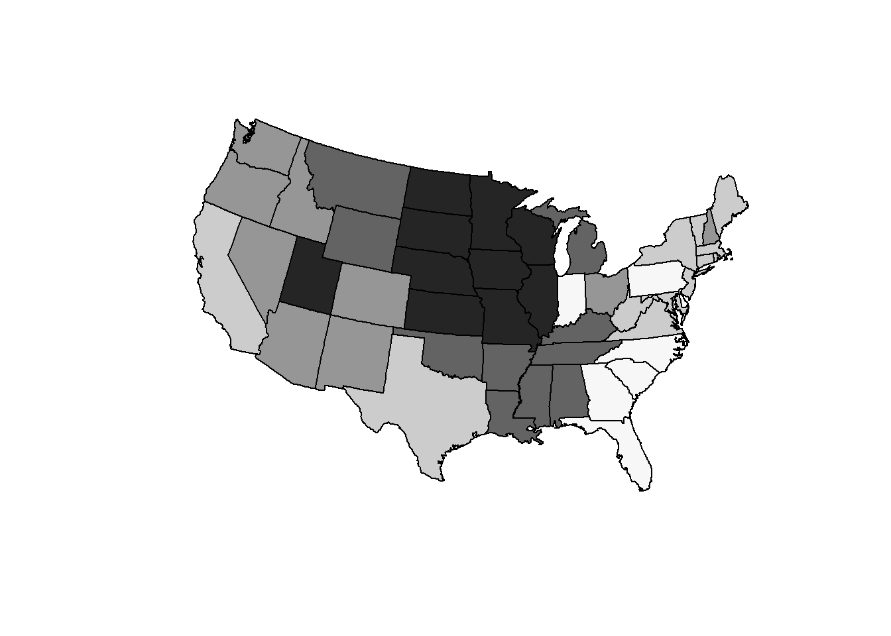
4.2) Adding color, legends, and titles
- Finally, we can set a color scheme of “blues”, a
styleof “quantiles” as well as a title and legend
plotclr <- brewer.pal(nclr, "Blues")
class <- classIntervals(plotvar, nclr, style = "quantile")
colcode <- findColours(class, plotclr, digits = 3)
plot(states.math.laea, col = colcode, border = "grey",axes = F)
title(main = "SAT Math Scores in 2010 \n by Sunder Sai",
sub = "Data Source: College Board")
legend("bottomleft", legend = names(attr(colcode,"table")),
fill = attr(colcode, "palette"), cex=0.45)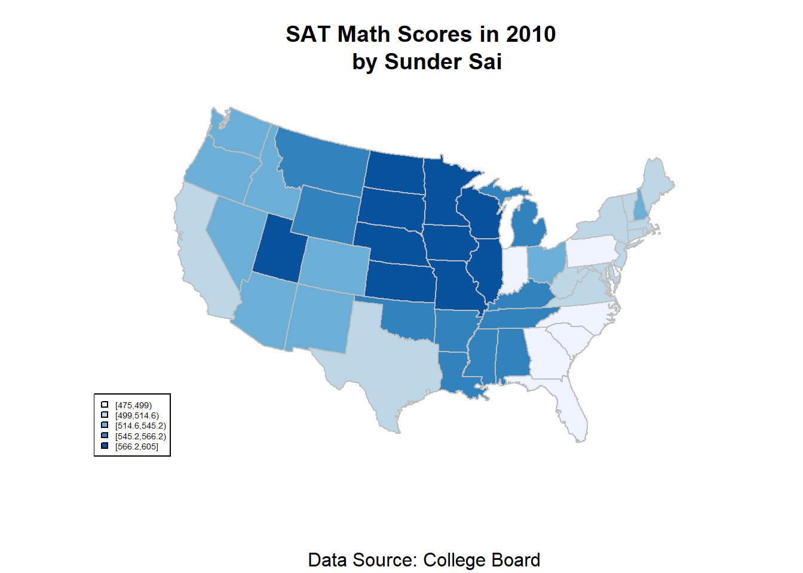